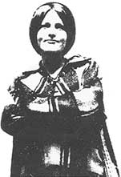

Excerpted by permission of Owner-Builder Publications from The Owner-Builder and The Code: Politics of Building Your Home, by Ken Kern, Ted Kogon, and Rob Thailon. Copyright©1976 by Ken Kern, Ted Kogon, and Rob Thallon. Paperback, $5.00.
Anon Forrest-owner-builder and prime mover in United Stand-has shown it's possible for back-to-the-landers to have their voices heard: She's been made a commissioner in California's Commission of Housing and Community Development.
Just the thought of health and construction codes can send shivers up the spine of the do-it-yourself builder and make the heart of the homesteader skip a beat. And for good reason. Much time has been lost, physical energy wasted, money spent, back-to-the-landers discouraged, and owner-builders driven off their land and from their homes because of these all-pervading-but sporadically and unevenly enforced-regulations.
What is "The Building Code" . . . what is the "Health Code" . . . from where do these regulations come, whom do they protect, by whom and how are they enforced, what are the penalties for non-compliance, and-most important of all-how do they get changed to meet the real needs and concerns of people (you and me)? These are just some of the questions that need answers. Answers that-believe it or not-are frequently difficult to come by. Some state legislatures (California's, until very recently, to name an example) adopt one code-applicable to any single-family dwelling whether constructed in the city, suburbs, or the woods-that all political subdivisions within the state must abide by. The lawmakers of other states-such as Texas or Vermont-leave it to the individual counties (a variation from county to county is possible) or to local municipalities (with the likelihood of a different set of building regulations for each town and city in the state!) to adopt or not adopt a building code. Still other states (New York, for instance) have promulgated general construction codes but don't force them on the municipalities within their boundaries . . . each local government has the freedom to either adopt or not adopt its state's building law.
Thanks to this hodgepodge approach to the problem, it has been estimated that-during 1968-there were 5,000 different building codes in force in the United States. No wonder that questions about regulations are frequently difficult to answer.
Though there have been warnings in most do-it-yourself construction books, manuals, and magazines about building and health codes, they have mostly been just that . . . warnings that such restrictions exist and that they must be complied with. As the back-to-thel-and movement has gained momentum, however, more and more self-built homes have violated these codes which-in far too many cases-has resulted in the taggings, evictions from, and demolitions of owner-constructed dwellings.
Clearly, do-it-yourself builders need [1] understandable interpretations of their local health and building codes, [2] a method of exchanging information about the sometimes capricious manner in which local bureaucrats enforce or fail to enforce those regulations, and [3] some way of organizing themselves so that they have a meaningful say in how existing codes are enforced, dropped altogether, or modified . . . and in how new ones are written.
A very large step toward satisfying this three-part need was recently taken with the publication of a new book, The Owner-Builder and the Code: Politics of Building Your Home . . . which explores the murky waters of the health and construction codes, their origins, the growing tendency for such regulations to be written and enforced by big-business-oriented bureaucrats . . . and the plight of the owner-builder who feels increasingly alienated and put upon by the whole trend.
The volume was authored by three men who take this developing problem quite seriously: Ken Kern (a pioneer in "alternative" architecture and low-cost construction and author of The Owner-Built Home and The Owner-Built Homestead), Ted Kogon (a key figure in United Stand-a Mendocino County, California organization of owner-builders who have successfully defended their homes from the bureaucrats), and Rob Thallon (an instructor in architectural design who was awarded his master's degree for a thesis on self-built homes).
The following excerpt from the Kern-Kogon-Thallon book traces the recent confrontation between the "Code Enforcers" of Mendocino County, California on the one hand . . . and the
"rural self-contractors" who live within that jurisdiction on the other. Of old property values against new ideas. Of short hair versus long. Of bureaucrats and administrators and the government and an entrenched legal establishment finally-for once!-being stopped in its tracks by "the people" : "The people ", in this case, being a group of do-it-yourself home
builders known as United ,Stand . . . and Jerry Brown, the new and enlightened young governor of the state of California.
The story of United Stand graphically illustrates the extremes in code enforcement and how the codes are sometimes used to raze low-cost homes instead of promote them. It exposes the contradictions between code uniformity and individual self-determination. It also tells the story of an alliance of owner-builders who have successfully utilized the political process in defense of their homes.
The success and failure of United Stand is closely related to the legitimacy of the lifestyle which spawned the current wave of owner-building, and to the ability of democracy to permit that way of life. United Stand's strength is derived from the awareness that the right to shelter is inalienable. Its weakness is that universal infirmity . . . namely, perfunctory and selective treatment by disinterested government agencies.
The story of United Stand is a lesson in the art of affirmative political action, of common citizens uniting to implement their group will. The authors hope our readers will learn from the experience of United Stand. We hope this book will foster a political consciousness which will enable owner-builders to resist the tyranny of prohibitive government control over the act of people providing their own shelter.
Mendocino County, California is located 80 miles north of San Francisco, in the central-to-northern portion of the state. Its coastline is unsurpassed in its beauty. Foggy coastal and river forests have produced magnificent stands of California redwoods. Its flat to gently rolling farmlands, wet winters, and dry, hot summers make Mendocino a leading producer of fine wines. Vineyards and trees, along with tourism, are the county's greatest resources. Yet, despite the success of these industries, Mendocino's general economy is depressed.
Land not owned by timber, wine, or ranch interests is often owned by affluent city people maintaining country homes. Many San Francisco-oriented artists live communally in this inspirational environment. The back-to-the-land movement discovered Mendocino naturally enough. Young people, seeking relief from the oppressive environment of the cities, began to purchase logged-over and low-utility parcels of land in the hills.
The people "took to the hills" and began developing homesteads. The conservative native residents viewed the newcomers skeptically. In some circles the dress, appearance, behavior, and general lifestyle of the newcomers was treated with hostility. A sentiment developed which stereotyped the new landowners as freeloaders on welfare, non-contributors to the tax pool, and responsible for lowering neighboring land values.
The effect of the hill-folk in civic functions was not always well received. They often required a more creative atmosphere for their children than that offered in the rural schools. Their presence required extended bus service and other "inconveniences" for the school district. It is said that people on the school board complained to county officials about the newcomers. Nude swimming and sunbathing were becoming commonplace, and complaints were filed about that, too. The young people in the hills found their public lives under scrutiny by the established locals, but-as yet-their private lives remained free from attack.
A short distance from Ukiah, the county seat, is an agricultural area known as Potter Valley. Mid-Mountain ranch is located in the hills above the valley. The ranch had been subdivided and sold to young people who were willing to hike in when their roads washed out, and who were resourceful enough to contend with the summer water shortage.
In January 1974, an airplane made continual passes over Mid-Mountain ranch, flying low enough for residents to see the pilot (despite minimum FAA ceiling regulations of 500 feet). The plane hovered over the homesteads allowing the residents to draw the correct assumption that they were under surveillance. On February 5, 1974, a task force of building and health inspectors, a deputy sheriff, and a district attorney's representative ascended Mid-Mountain Road in four-wheel-drive vehicles. The task force put notices on several homes whose owners were away, declaring the premises "unfit for human occupance". Compliance with these notices meant the homes had to be vacated. Needless to say, when they returned home, unsuspecting occupants were shocked and terrified.
The people given notice on Mid-Mountain were not members of a commune, openly challenging accepted cultural patterns. They were individual landowners and taxpayers, quietly affirming the basic tradition of pioneer homesteading. Individual property owners could now receive categorical treatment by authorities. The task force gave its own rendition of the nocturnal knock-on-the-door tactics Americans believe to exist in Communist countries. Due Process was ignored by the task force which made no prior announcement that an inspection was pending. The homeowners were not informed of the appeals process. They were simply told to leave and demolish their homes.
The Mid-Mountain community immediately made contact with a Ukiah lawyer. He assured them that the codes were negotiable, and that the inspectors were flexible. Ten days later, the same lawyer was told by county inspectors that the houses could not be brought up to code and that demolition was the only recourse.
Letters arrived shortly after the task force appearance. The letters informed the people that their structures were in violation of Mendocino County building, zoning, and health codes. They were ordered to vacate and demolish their homes in 30 days or face formal action. The letters were signed by Chief Building Inspector Donald Uhr, who was to emerge as the most intractable and biased of the county personnel. (One couple who hadn't even been tagged received an Uhr letter.)
The principals were ordered to vacate and demolish their homes in mid-winter. Even California is wet and cold in the winter and, the code requirements notwithstanding, there were families living in the homes. To move their belongings down in traversable roads during the rainy season would be difficult to say the least.
The Mid-Mountain community was experienced in cooperative effort. Most of the land parcels were owned and developed by individual families, but the community jointly owned 20 acres on which a milling operation and an auto shop had been built. The taggings turned the people's energies away from homesteading and community development. Survival required that they organize against the destruction of their homes, which meant becoming political. An apartment was rented in Ukiah-eventually to serve as United Stand headquarters-where the people researched the codes, made important contacts, and sought solutions.
As the newly formed group began to gather information, it became obvious that task force enforcement was discriminant. The group discovered a prejudicial Grand Jury recommendation which had precipitated the creation of the task force:
Whereas, within the County of Mendocino there are numerous examples of persons who totally disregard building as well as health and sanitation laws; and
Whereas, for the health, safety, and welfare of the citizens of the County of Mendocino, it is essential that steps be taken immediately to combat the violators and to utilize all of the civil or criminal remedies;
Now, therefore, be it resolved that a task force be created and that a representative from the building, health, and sheriff's departments join with a representative of the District Attorney's office to seek out the violators and pursue whatever remedies may be available to correct the violations.
"Citizens" were distinguished from "people" and "violators". Couldn't a violator be a citizen?
The notion that the victims of the task force were treated discriminantly was to become a central issue in the defense articulated by United Stand. More evidence than just the semantics of the Grand Jury resolution supported the contention that a lifestyle was under attack. One Grand Juror explicitly revealed his prejudice in excerpts from a letter to the supervisors:
I was your first building inspection director and fought for years for compliance with this very same type of vociferous minority. They have always wanted to desecrate the most beautiful county in California.
This same vociferous minority contributes little or nothing to the tax base of this county, and in many instances are a detriment to the county's economy.
Who will determine where these substandard homes may be built? It will be either pure discrimination, or it will open up our county to every indigent in the United States.
I am a third generation Mendocino County resident, and I beg of you not to allow these pressure groups to change our codes.
Chief Building Inspector Don Uhr out did the Grand Juror for bigoted and untenable remarks. In a November 1974 New Times article Uhr said:
Suppose Mendocino does lower its building standards . . . every hippie and freak from all over the world is going to come storming here. They'll all be on welfare, or maybe just 50% on welfare. It would break the county .
. . . last week we had a fellow beat to death in one of the state parks on the coast. It could have been the motorcycle group or it could have been anyone. But when a guy professes peace and runs around with peace symbols on his collar, it don't mean he isn't going to beat your brains out if he gets a chance.
These statements reflect the attitudes which gave rise to the task force.
Two sympathetic experts offered their resistance in those formative days of United Stand. One was Sim Van Der Ryn, a U.C. Berkeley professor of architecture. He gave Mid-Mountain representatives copies of his Owner-Built Home Resolution and his plans for a composting toilet. He put them in touch with the Housing Law Center at Berkeley and promised to provide health, sanitation, and architectural experts for their day in court.
Invaluable legal advice came from Carl Shapiro, an elderly and experienced attorney, who had successfully defended Marin County houseboat inhabitants from a land-fill, high-rise development planned for their harbor. Shapiro told United Stand organizers that their problem could not be defended from the posture of economic discrimination, for judges do not understand poverty. A defense built upon discriminate implementation had already been attempted and had failed. Furthermore, it would be inconsistent to demand that an unjust law be imposed on everyone equally.
The course chosen was to pursue all possible administrative remedies without lawyers, while conducting a campaign to educate the public to the motives, ideals, and lifestyle of the code victims. Deprecating stereotypes had to be dispelled in order to establish a broad base of support for their position. In the final analysis, judges and juries are influenced by public opinion. The Mid-Mountain people hoped to stall the judicial process to gain time to affect this opinion. A series of meetings was organized to share the strategy. At this stage, United Stand-the organization and the name-was tentative. Confirmation came at a Ukiah meeting between task force representatives and concerned citizens.
The March 13, 1974 meeting was attended by over 200 people, including a sizable number of longtime residents. The emerging spokespeople and primary organizers of United Stand-Anon Forrest, Saul Krimsly, John Pateros, and Brent Walson-addressed the crowd, defining the problem as they saw it. Don Uhr and other task force representatives also spoke to the crowd. Uhr was cryptic: "Most of you have unsolvable problems." The meeting marked the debut of United Stand and imparted the understanding that the political process must be used to gain relief. It became clear that many county bureaucrats (with the possible exception of Uhr) were not exuberant over the prospects of having to administer the supervisor's program. "Talk to the supervisors," United Stand was told.
Its ranks enhanced by 70 working volunteers, US organized itself into work committees. One group thoroughly studied the code and began a dialogue with the county administrators. Rapport was established with other task force victims throughout the county. Free spot messages on local radio stations were utilized. A bi-weekly newsletter became regularly featured in local counterculture newspapers. Candidates for public office were contacted, and those sympathetic to the cause were supported. A battery of lawyers, many of whom were living an alternative lifestyle, was assembled. A slide show of owner-builder homes and a monologue explaining their point of view were developed. This presentation was to become the favorite medium by which this lifestyle was illustrated.
The task force itself did much to unify people behind United Stand's cause. It continued the taggings in other parts of the county and the tagees readily assembled under the US banner. As Anon Forrest says-in the New Times article-regarding the public relations campaign and the continued taggings:
We needed to be recognized as cohabitants of the county. Except for our hair and funky costumes, we're not very different from anyone else around here. We own the land we live on. We pay taxes on it. Of the 225 people at the church meeting, perhaps 70 were straights . . . old-time residents in town or retired people on little farms and ranches. Before the county officials showed up, we had about an hour to get our message across to them. We outlined what the problem was and what we thought the solutions were. We said that the problem was rooted in fear and misunderstanding. It was our paranoia. We'd left our image
to their imagination, and we came out as Charlie Manson, drug addicts, and all kinds of other bad scenes they'd read about and seen on TV. Some of that started to change at the first meeting. Now a lot of those folks are with us. We owe the task force a lot . . . and this is not just conciliatory crap. It forced us out of hiding and into a place in the community.
Meanwhile, United Stand's crack team of lawyers threatened to file suit in Federal Court, alleging that the surreptitious task force taggings, the searches without warrants, the ensuing orders to demolish the homes, and the denial of the right to appeal all violated the plaintiff's (United Stand's) constitutional rights to privacy and against unreasonable searches by government agents. Significantly, the potential suit clearly showed that the task force had violated the inspection and abatement procedures of the Uniform Building Code, the district attorney's Guidelines for Inspections, and Uhr's own Operation Guidelines for the Task Force. So much for administrators who "go by the book".
As United Stand prepared to meet with the supervisors, it had become, in two short months, a full-fledged organization touching many bases in Mendocino. It had filed suit against the county in Federal Court. Its operations were being subsidized by public support through donations and benefit activities. The supervisors had to listen.
On April 16, 1974, the presentation to the supervisors took place at the county courthouse. United Stand had prepared, along with the color slide show, a tidy, professional 20-page booklet describing what US was, who it represented, a summary of its position, schematic drawings of alternative sanitation systems, and a proposal. US proposed that the board create a committee, composed of task force personnel and two supervisors, for the purposes of studying the violations and of making recommendations to the board "regarding administrative remedies for gaining the compliance of present violators". The supervisors had been offered a way out of the quagmire of their own creation, and they accepted unanimously. The Building and Land Use Review Committee, with the unfortunate but apropos acronym, BLUR, was formed.
The BLUR committee proved basically ineffectual. No member took the initiative necessary to implement solutions. On the issues of building and sanitation, all parties seemed content to fall back on the claim that it was not the responsibility of the county, since state enacted codes were in question. United Stand attended the meetings diligently and offered intelligent input, but the taggings continued despite the ongoing negotiations.
United Stand's desire to see the problem rectified locally was beginning to seem futile. The board of supervisors and the building department both disclaimed the power to interpretively modify the UBC. The district attorney said that it was his duty to carry on the abatement proceedings. By September, United Stand began to ask itself what to do when all reasonable measures of compliance and negotiation had expired. It had done its homework well in the nine months of its existence. It had learned the language of the various county departments and had offered methods by which alternative lifestyles could be embraced within the concepts and the letter of the codes. United Stand did the county's homework for it, but the people with authority remained impotent.
United Stand even spelled out county rights under state law by soliciting an Attorney General's Opinion which reaffirmed local jurisdictional right to make code changes on the basis of "local topography, geography, or general condition". But, unhappily, only the district attorney was doing his job . . . 145 outlaw builders had been cited, with the first tagees already en route to court. Donald Uhr unwittingly offered a helpful suggestion. He told US to go to the State Department of Housing and Community Development (the state-level guardians of the codes) since their concerns were a question of state law.
United Stand had made contact with the state government on one occasion. It had journeyed to Sacramento to describe its problems to Assemblyman Barry Keene and to Senator Peter Behr, both representing Mendocino County. Each legislator was sympathetic and helpful. Keene offered to introduce a spot bill if legislation proved necessary, but US was dedicated to local control. It avoided state intervention until it was certain that the county was going to continue to pass the buck.
Despite its leanings toward local self-determination, US sounded out candidates for state office on the issues it was raising. On October 12, 1974, US met in Ukiah with Edmund G. (Jerry) Brown, who was on the campaign trail to the governor's office. Brown was asked for his views on housing and uniformity. He answered that urban housing had to follow the guidelines of economics, ecology, and energy, but that "the cabin up in the hills" should not come under state-mandated uniformity. US informed him that the UBC precluded the cabin in the hills. Brown couldn't understand this, but asked to be kept informed of US activities.
On April 2, 1975, just three months after his inauguration as Governor of the state of California, Jerry Brown was to hear the United Stand story in full. As the first defendants were about to go to trial in Mendocino for the heinous crime of building their homes without a permit, US was granted a latenight interview with the governor. The slide show was presented and their problems defined for him. He urged US to submit a bill which he said he would sign, provided the bill was no longer than one page. "This administration doesn't read anything longer than one page," the governor said, taking a poke at the notorious California bureaucracy. United Stand was dumbfounded . . . seemingly it had finally arrived at the place where the buck stopped passing.
United Stand did not author a bill, because a tactical decision was reached to seek administrative remedies on the state level. With a willing governor, there was no problem establishing the remedial procedure.
A pilot project was begun to study the situation of rural owner-builders and to recommend a new and less restrictive article to the state housing law. The committee to conduct the study was called the Class K Steering Committee . . . "Class K" coming from a US proposal to add a new classification to the UBC's existing A-J categories of structures.
At the time of this writing, the Class K Steering Committee has had four meetings, and it appears that a new "owner-builder" regulation will evolve in California. It won't be a panacea to the Big Brother syndrome in government, and it won't solve the need for alternative sewage systems . . . a major problem area for owner-builders. It could, however, serve to take the heat off owner-builders of simple, ecological dwellings. Perhaps, in time, the UBC will evolve into a code of one page!
The first court cases of United Stand members have fortunately resulted in acquittals. Brilliant legal counsel by United Stand attorney, Barry Vogel, and the one-year statute of limitations combined to result in US victories in the first three cases. Unhappily, the judge ruled as irrelevant arguments on Due Process and Equal Protection, lifestyle, and geographical and topographical considerations.
United Stand is confident that its hard work will be justified. An owner-builder amendment to the housing code is a first step. Adding a page of law to the existing volumes does not solve the problem, Anon Forrest acknowledges, but she says assuredly that in the end "reason will prevail".
|
 |
|
|